The marketing landscape is rapidly evolving as businesses
compete for consumer attention in an increasingly saturated market.
Traditional methods of campaign planning are no longer enough;
marketers need to make informed decisions based on concrete insights about
consumer behavior, preferences, and trends.
In this environment, the ability to analyze historical data and predict future
outcomes has become a vital competitive advantage. By leveraging data analytics,
companies can better allocate resources, personalize their messaging, and optimize
the timing and channels of their campaigns.
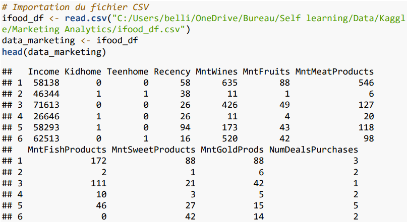
Skill
R
Data Visualization
Predictive modeling
Descriptive statistics
Model evaluation
How can we optimize future marketing campaigns to maximize customer engagement by leveraging predictive modeling ?
Ojective
The objective was to harness historical data from XYZ
Company—including customer profiles, campaign outcomes,
and channel performances—to build a model that forecasts
the success of future campaigns. This model aims to provide
actionable insights for refining marketing strategies and
enhancing overall campaign effectiveness.
The dataset
The data used for this project was sourced
from Kaggle, a well-known platform for datasets
and data science competitions.
The dataset consists of 2,205 observations and includes
39 quantitative variables. Among these variables are key
metrics such as age, income, whether the individual responded
positively to campaign N, and the amount spent on certain purchases.
Some key information
The revenue range among participants varies from €1,730 to €113,734
per year. At least half of the participants have no dependent children.
The age of clients ranges from 24 to 80 years, with an average age of approximately 51 years.
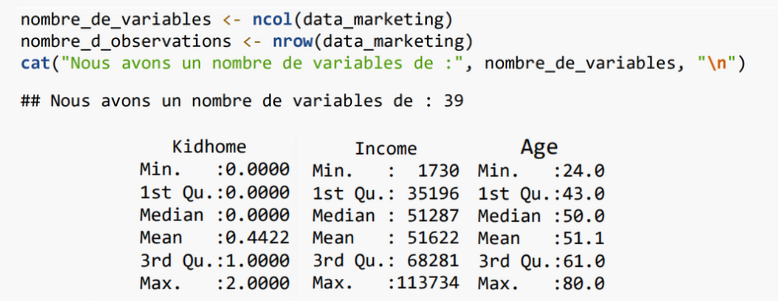
Data preparation for a new model
In our data preparation phase, we construct a model using the total
number of campaign acceptances as the response variable. To enhance
the accuracy and relevance of our linear regression model, we employ
the regsubsets function. This function is instrumental in selecting
the most pertinent variables by evaluating all possible subsets of predictors.
By focusing on the most significant variables, we refine our model to better predict
the likelihood of campaign success, ensuring a more robust and insightful analysis.
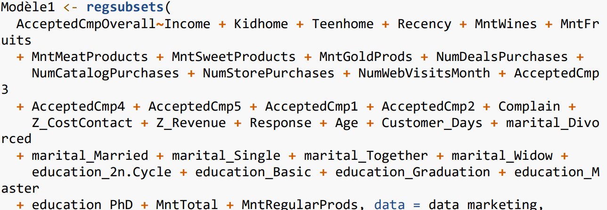
The model we created has linear dependencies between certain variables.
The issue arises when several predictive variables are highly correlated, making
it difficult for the regression algorithm to distinguish their individual impact
on the target variable.
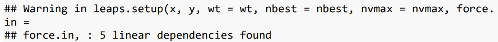
This multicollinearity can lead to unstable coefficient estimates, reducing
the model's interpretability. Therefore, we will check for correlations to identify and
address any strongly correlated variables before proceeding with model fitting.
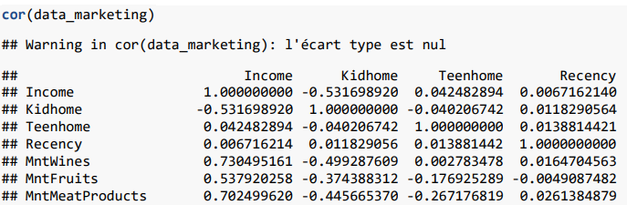
Upon examining the provided correlation matrix, several pairs of variables exhibit strong
correlations (in absolute value). Notably, Income and MntTotal show a correlation of 0.823,
indicating a substantial relationship between a customer's income and their total spending.
Similarly, MntWines and MntTotal are highly correlated (corr = 0.9617), as well as MntMeatProducts
and MntTotal (corr = 0.9435). Other notable pairs include MntFruits and MntTotal (corr = 0.9288),
MntSweetProducts and MntTotal (corr = 0.9079), and MntFishProducts and MntTotal (corr = 0.8875).
These strong correlations suggest that total spending is highly influenced by spending across
various product categories.
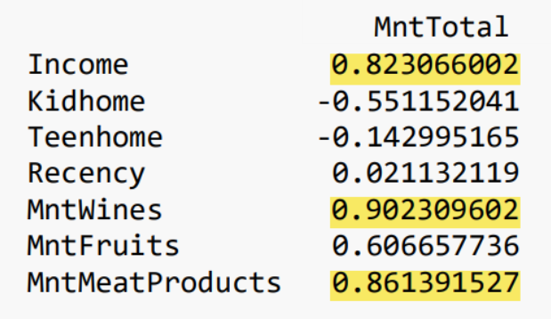
To prevent model errors, we will omit the following variables: MntWines, MntMeatProducts, MntFruits,
MntSweetProducts, MntFishProducts, MntRegularProds, AcceptedCmp1, AcceptedCmp2, AcceptedCmp3, AcceptedCmp4,
and AcceptedCmp5.
Additionally, certain variables such as Z_CostContact and Z_Revenue do not appear to contribute to the variance
of other variables. Moreover, we lack sufficient information about their nature and relevance, which suggests
that they could be removed from the dataset.
These variables may introduce multicollinearity or add noise to the model without providing significant predictive power.
By excluding them, we aim to improve the model's accuracy and interpretability.
A ridge linear model
I use the glmnet function to fit regression models, which helps
regularize the coefficients in order to better handle issues like
multicollinearity. This method reduces the impact of highly correlated
variables while retaining all variables in the model, as some of the
remaining variables still exhibit strong correlations.
We proceed by fitting the Ridge model using glmnet, and this new model
will be referred to as 'best_model'. The next step is to display the
coefficients of each variable, which is crucial for interpreting the model
and understanding the relative importance of each explanatory variable.
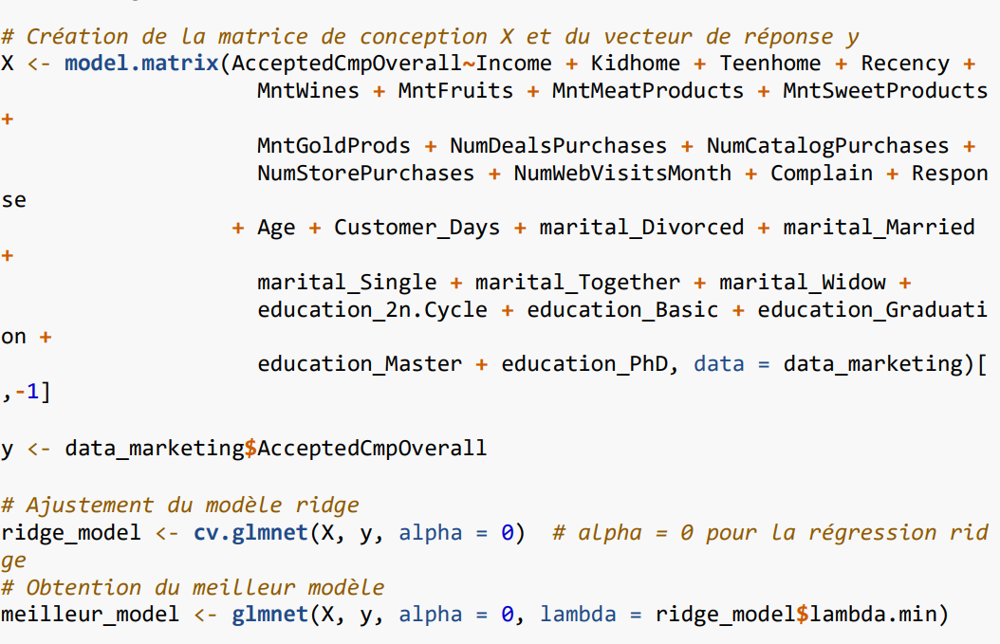
In our case, for a linear regression, each coefficient will indicate how much the
target variable changes on average for a one-unit change in the explanatory variable,
holding all other factors constant. This means that each coefficient represents the
isolated effect of the corresponding variable on the target, providing insight into
the relationship between the predictors and the outcome of interest.
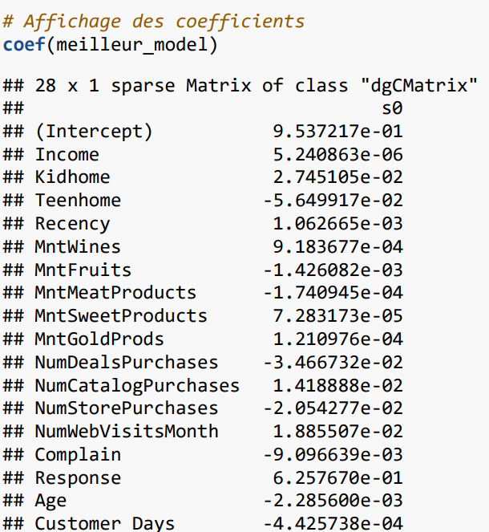
In the model, variables with non-zero coefficients are considered to have an impact on
the target variable. A positive coefficient indicates that an increase in the explanatory
variable leads to an increase in the target variable. Conversely, a negative coefficient
implies that an increase in the explanatory variable results in a decrease in the target
variable. Variables with zero coefficients can be ignored in the interpretation, as they do
not significantly influence the outcome.
We created a linear model (using the lm function) and then generated a summary of the results.
The R² value is 0.431, indicating that the model explains approximately 43.1% of the total variance
in the dependent variable. This suggests that the model captures a significant portion of the observed
variability. The F-test evaluates the overall significance of the model.
With an F-statistic of 66.01
and a p-value close to zero (p-value : 2.2e-16), this implies that the model as a whole is statistically
significant. In other words, at least one of the independent variables has a significant effect on the dependent variable.
The analysis also reveals notable trends: for each additional teenager in the household, there is a 0.059 decrease in the
likelihood of accepting the marketing campaign.
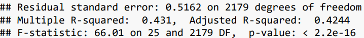
In our model, we found that each promotional purchase is linked to a decrease of 0.0366 in the acceptance rate, while each in-store
purchase results in a reduction of 0.02528. Conversely, customers who accepted the most recent campaign show a significant increase of
0.6566 in the dependent variable. Regarding education, levels such as Second Cycle, Basic, and Graduation are associated with higher
response rates, highlighting the significant influence of education on attitudes related to the dependent variable.
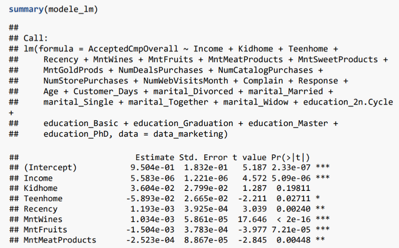
Statistical test to data
We will conduct normality (Shapiro-Wilk), heteroscedasticity (Breusch-Pagan), and residual autocorrelation (Durbin-Watson) tests,
with a significance threshold of 0.05 for each.
The Shapiro-Wilk test checks whether the residuals of a regression model follow a normal distribution. The normality of residuals is crucial
for certain regression models, particularly for the validity of significance tests (p-values) and confidence intervals.
The homoscedasticity assumption (constant variance of errors) is a key condition in classical linear regression. If this assumption is violated
(i.e., heteroscedasticity is present), the standard errors of the estimated coefficients may be inaccurate, affecting the reliability of p-values
and confidence intervals. A model with heteroscedasticity can produce less reliable predictions and underestimate the variability of the estimates.
The Durbin-Watson test checks for autocorrelation of residuals, meaning whether the errors (residuals) of a model are correlated with each other.
If residuals are correlated, it indicates that the model has not captured all the structure in the data. Autocorrelation can result in inefficient
coefficient estimates, which impacts the model's predictive power.
For a 5% threshold, we observe that these three tests are passed.
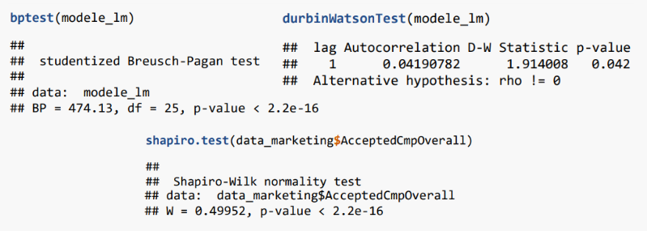
Charts and Key Insights
Without a doubt, the vast majority of customers did not respond
positively to any of the advertising campaigns we conducted. We
should focus on identifying the key criteria related to our customers
behavior patterns. By doing so, we can better allocate our marketing
investments, ensuring that they are targeted and more likely to yield positive results.
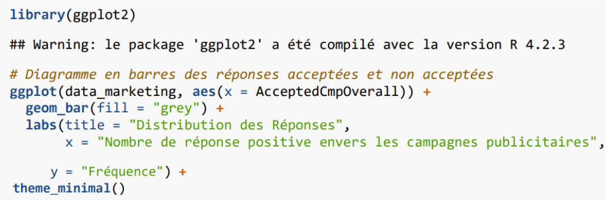
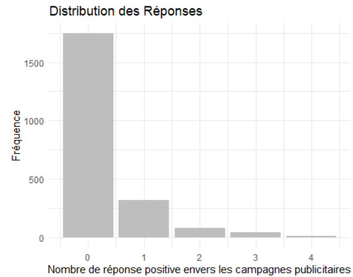
We can observe that nearly all customers shop in-store, yet many do not use the catalog.
This presents an opportunity to improve either by revising the catalog content or increasing
its distribution to a broader audience. Additionally, the store's website plays a significant
role in driving purchases. We could consider investing more in digital marketing to attract more
customers, especially in today's increasingly digital era.
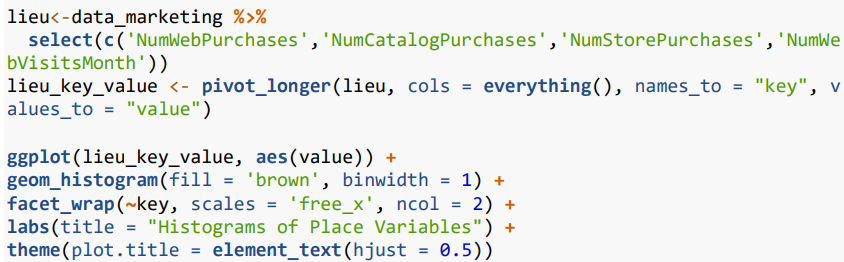
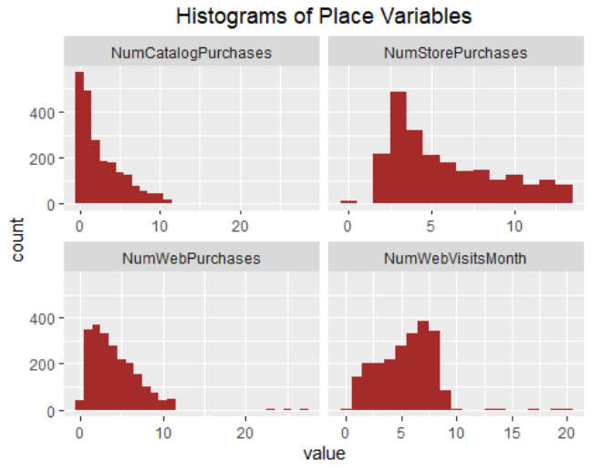
We can observe that the vast majority of customers shop in-store, although many do not use the catalog.
This presents an opportunity for improvement by either revising the catalog content or distributing it to a wider audience.
Additionally, the store's website plays a significant role in driving purchases. We could focus on increasing digital marketing efforts to attract more customers, especially considering our current era, which is becoming increasingly digital.
Age and correlation
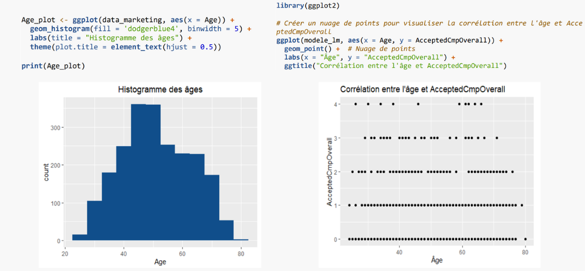
We observe that most customers are between 30 and 70 years old, which can be identified as adults, parents, or even grandparents.
The graph shows the correlation between customer age and the number of accepted advertising campaigns (`AcceptedCmpOverall`). Each point represents a customer, with age on the x-axis and the number of accepted campaigns on the y-axis.
It appears that campaign acceptance is not strongly influenced by age. The acceptance values are spread across all age groups without a clear trend. This suggests that there is no obvious relationship between age and the likelihood of accepting advertising campaigns, indicating that a marketing strategy targeting based solely on age would not be optimal. Instead, it would be better to design campaigns that appeal to a broad audience to maximize reach.
Interpretation
In conclusion, our analysis reveals important insights into customer behavior and the effectiveness of marketing campaigns. Although we initially hypothesized that factors like age might play a crucial role in campaign acceptance, the data shows otherwise. The correlation analysis suggests no clear relationship between age and campaign acceptance, indicating that targeted age-specific marketing may not be effective.
Instead, our findings highlight the importance of a broad, inclusive marketing approach. The correlation between income and total spending suggests that customers with higher incomes tend to spend more across all categories, emphasizing the need for targeted offers based on purchasing power rather than demographic characteristics such as age.
Moreover, the variable selection process and Ridge regression model helped refine the predictive power by focusing on the most impactful factors, thereby improving the model's robustness and interpretability. The statistical tests indicate that our model meets the assumptions necessary for reliable analysis, providing confidence in the results.
In terms of actionable strategies, improving catalog usage and investing in digital marketing channels appear to be promising areas. The store's website has proven to be a significant driver of purchases, suggesting that enhancing our digital marketing efforts could attract more customers, particularly in today's digital landscape.
Ultimately, our goal should be to identify the key behavioral criteria that can guide marketing investment, ensuring that campaigns are both efficient and effective, maximizing response rates and improving return on investment.
Recommendation
First, a detailed customer segmentation analysis should be conducted to design more targeted campaigns for different groups. Additionally, further behavioral analysis could help identify motivations behind purchasing decisions, providing more refined targeting criteria. A/B testing of different campaign versions would allow us to determine the most effective approaches, while incorporating additional data sources, such as social media engagement or geographic data, could improve predictive accuracy.
Analyzing customer feedback, such as reviews or survey responses, through sentiment analysis can guide improvements. Cross-channel analysis is also recommended to understand the interaction between marketing channels and optimize resource allocation. A longitudinal study would help track customer behavior over time, anticipating trends and maintaining campaign relevance. Finally, experimenting with catalog content and expanding digital marketing would help increase engagement across different customer segments.
Personal Learnings
Through my studies, I have delved into various statistical principles, such as regression analysis, correlation, and hypothesis testing. This foundation has enabled me to identify patterns and relationships within data sets, which is particularly important in marketing. For instance, knowing how to interpret the significance of p-values and R² values helps assess the effectiveness of marketing campaigns and informs decision-making processes.
Additionally, I have learned to apply these statistical concepts in real-world scenarios, enhancing my ability to develop predictive models that optimize marketing strategies. This includes understanding customer behavior, segmenting audiences, and predicting campaign success rates. By leveraging statistical techniques, I can analyze complex data more effectively, allowing for informed decisions that drive better marketing outcomes.
Overall, this personal learning journey has equipped me with the necessary skills to analyze marketing data critically, leading to more effective strategies and improved return on investment.